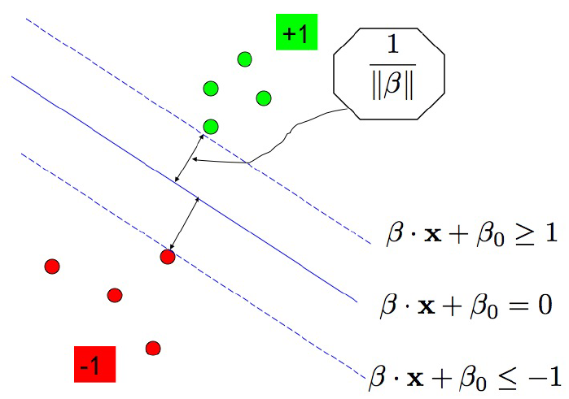

Discriminant Analysis
$$P(\mathbf{Y}=k|\mathbf{X}=x) = \frac{\pi_k f_k(x)}{\sum_l\pi_l f_l(x)}$$
\(\pi_k=P(Y=k)\) marginal probability for class \(k\)
\(f_k(x)=P(\mathbf{X}=x|\mathbf{Y}=k)\sim N(\mu_k,\Sigma_k)\)
$$\begin{split}
d_k(x) = &(x-\mu_k)^t\Sigma_k^{-1}(x-\mu_k)+\log|\Sigma_k|\\
&-2\log\pi_k
\end{split}$$
Quadratic Discriminant Analysis (QDA)
quadratic decision boundaries
Sample covariance matrix for each class
$$\hat{\Sigma}_k = \frac{1}{n_k-1}\sum_{i:y_i=k}(x_i-\hat{\mu}_k)(x_i-\hat{\mu}_k)^t$$
Linear Discriminant Analysis (LDA)
linear decision boundaries
Assume \(\Sigma_k=\Sigma\) (the pooled sample covariance matrix)
$$\hat{\Sigma} = \frac{1}{n-K}\sum_{k=1}^K\sum_{i:y_i=k}(x_i-\hat{\mu}_k)(x_i-\hat{\mu}_k)^t$$
Naive Bayes
Assume \(\Sigma_k=\Sigma\) is diagonal.
Fisher Discriminant Analysis (FDA)
Minimize \(\frac{\textrm{between group variance}}{\textrm{within group variance}}\).
Implicitly assumes \(\Sigma_k=\Sigma\).
$$B = \frac{1}{K-1}\sum_{k=1}^K n_k (\bar{x}_k-\bar{x})(\bar{x}_k-\bar{x})^t$$
$$W = \frac{1}{n-K}\sum_{k=1}^K\sum_{i:y_i=k}(x_i-\bar{x}_k)(x_i-\bar{x}_k)^t$$
Solve
$$ \max_a a^t B a \;\textrm{ subject to }\; a^t W a = 1 $$
Principal components analysis (PCA)
linear decision boundaries
$$ \mathbf{X} = \mathbf{U} \mathbf{D} \mathbf{V}^{\dagger} $$
\(\mathbf{X}_{n\times p}\) each column has zero mean and unit variance.
\(\mathbf{U}\) and \(\mathbf{V}\) have orthonormal columns.
\(\mathbf{D}\) diagonal matrix with descending diagonals.
score vectors: columns of \(\mathbf{X}\mathbf{V}\)
loading vectors: columns of \(\mathbf{V}\)
biplot: plot of both scores and loadings
scree plot: plot of the proportion of variance explained (PVE)
Logistic regression
$$ \mathbf{Y}|\mathbf{X}=x \sim \mathrm{Bern}\left(\eta(x,\beta) \right)$$
where \(\eta(x,\beta)=1/\left(1+e^{-\beta x}\right)\)
The MLE can be obtained by Reweighted LS Algorithm:
1. With given \(\beta\) calculate weight $$W = \mathrm{diag}\left[\eta(1-\eta)\right]$$
2. Calculate target value $$z=x\beta-W^{-1}(y-\eta)$$
3. Replace \(\beta\) by estimator from weighted least square
$$\beta = \left(x^tWx\right)^{-1}x^tW z $$
When data are well separated, add penalty term (Lasso) to get convergence.
Support vector machine (SVM)linear: maximize margin between two groups. linear non-separable
$$\mathrm{minimize}\quad \frac{1}{2}||\beta||^2+\gamma\sum\epsilon_i$$
$$\textrm{subject to}\quad y_i(\beta\cdot x_i+\beta_0)-1+\epsilon_i\ge 0,\; \epsilon_i\ge0$$
If two groups are separable, \(\gamma\to\infty\).
Compare with Loss + Penalty form
$$\mathrm{minimize}\quad \sum \left[1-y_if(x_i)\right] + \mu ||\beta||^2$$
with hinge loss as penalty.
It's dual problem:
$$\mathrm{maximize}\quad \sum\lambda_i-\frac{1}{2}\lambda_i\lambda_jy_iy_j(x_i\cdot x_j)$$
$$\textrm{subject to}\quad \sum \lambda_iy_i=0,\;0\le\lambda_i\le\gamma$$
Complementarity condition:
$$\lambda_i\left[y_i(\beta\cdot x_i+\beta_0)-1\right]=0$$
$$\hat{\beta} = \sum\lambda_iy_ix_i$$
Points with non-zero \(\lambda_i\) are support vectors.
non-linear:kernel trick
Define inner product \(K(x_i,x_j)\) in feature space.
Prediction of new point \(x^*\)
$$ \mathrm{sign}\left(\sum\lambda_iy_iK(x_i,x^*)+\hat{\beta}_0\right) $$
Popular kernels:
\(d\)th degree polynomial
$$ K(x,y) = (1+x\cdot y)^d$$
Radial basis (the feature space is of infinite-dimension)
$$ K(x,y) = e^{-||x-y||^2/c} $$